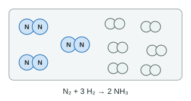

Begrensende reaktant og utbytte
I virkeligheten er det sjelden nøyaktig nok av alle råstoffene, og du får nesten aldri så mye produkt som regnestykket sier. Her lærer du å finne hvilket stoff som tar slutt først, og hvor godt en produksjon eller et forsøk har gått.
Begrensende reaktant
Tenk deg at du skal sette sammen sykler. Hver sykkel trenger 1 ramme og 2 hjul. Har du 3 rammer og 10 hjul, kan du bare lage 3 sykler. Rammene tar slutt først. De begrenser hvor mye du kan lage, og 4 hjul blir til overs.
I en reaksjon er det på samme måte. Den begrensende reaktanten er stoffet som tar slutt først. Den bestemmer hvor mye produkt som dannes. De andre reaktantene er i overskudd, og noe av dem blir igjen.
Ammoniakk brukes til å lage kunstgjødsel, blant annet ved Yara i Porsgrunn. \( \ce{N2 + 3H2 -> 2NH3} \)
Oppgave: En reaktor får 100 mol N2 og 240 mol H2. Hvilket stoff er begrensende, og hvor mye NH3 kan dannes?
- 100 mol N2 trenger \( 3 \cdot 100 = 300 \) mol H2. Det er bare 240 mol H2.
- Hydrogen tar slutt først. H2 er den begrensende reaktanten.
- Regn videre med H2: H2 : NH3 = 3 : 2. \( 240 \cdot \dfrac{2}{3} = 160 \text{ mol NH}_3 \)
- Det brukes \( 240 / 3 = 80 \) mol N2. 20 mol N2 blir til overs.
Svar: H2 er begrensende. Det kan dannes 160 mol NH3.
I industrien tilsetter man ofte det billigste råstoffet i overskudd. Da sikrer man at det dyreste stoffet blir brukt helt opp.
Utbytte
- Teoretisk utbytte er hvor mye produkt du kan få ifølge støkiometrien. Det regnes ut fra den begrensende reaktanten.
- Faktisk utbytte er hvor mye du faktisk får. Det måler du, for eksempel ved å veie.
\[ \text{utbytte i prosent} = \frac{\text{faktisk utbytte}}{\text{teoretisk utbytte}} \cdot 100\,\% \]
Brent kalk (CaO) lages ved å varme opp kalkstein (CaCO3) i en kalkovn. \( \ce{CaCO3 -> CaO + CO2} \)
Oppgave: 1000 kg kalkstein gir 520 kg brent kalk. Hva er utbyttet? Vi regner som om kalksteinen er ren CaCO3.
- Mol CaCO3: \( n = \dfrac{1\,000\,000 \text{ g}}{100{,}09 \text{ g/mol}} = 9991 \text{ mol} \)
- Molforhold 1 : 1. Det kan dannes 9991 mol CaO.
- Teoretisk utbytte: \( 9991 \text{ mol} \cdot 56{,}08 \text{ g/mol} = 560\,300 \text{ g} = 560{,}3 \text{ kg} \)
- Utbytte: \( \dfrac{520 \text{ kg}}{560{,}3 \text{ kg}} \cdot 100\,\% = 92{,}8\,\% \)
Svar: Utbyttet er 92,8 %.
Hvorfor blir utbyttet under 100 %?
- Reaksjonen går ikke helt ferdig.
- Noe av stoffet går til andre reaksjoner (sidereaksjoner).
- Stoff går tapt når du filtrerer, heller over eller vasker.
- Råstoffet er ikke helt rent.
Får du over 100 %, er det nesten alltid en feil. Produktet kan for eksempel være vått eller urent.
Når jern brenner til jernoksid, \( \ce{4Fe + 3O2 -> 2Fe2O3} \), skal massen i teorien øke med 43 %. I et forsøk ved Sauda vgs veide fire grupper stålulla før og etter. Massen økte med mellom 8 og 49 %, i snitt 23 %.
At de fleste fikk mindre enn 43 %, har flere grunner: ikke alt jernet brant, biter falt av, og noe av jernet ble til et annet jernoksid, Fe3O4, som gir mindre økning (38 %). Stålull er dessuten ikke rent jern, og den har ofte et tynt lag olje som brenner bort.
Én gruppe fikk 49 %, altså mer enn det som er mulig. Det tyder på en målefeil, for eksempel at vekten ikke var nullstilt. Hvordan du vurderer slike avvik og feilkilder, lærer du mer om i tema 8.
Test deg selv
Hvilket stoff er begrensende i beholderen?

- N2
- H2
- Ingen, det går opp
3 N2 trenger 9 H2, men det er bare 6. H2 tar slutt først. Det blir 4 NH3, og 1 N2 blir til overs.
Hva er den begrensende reaktanten?
- stoffet det er mest av
- stoffet som tar slutt først
- stoffet som dannes
Den begrensende reaktanten bestemmer hvor mye produkt som dannes.
Teoretisk utbytte er 50,0 g, og du får 42,0 g. Hva er utbyttet?
- 8,0 %
- 119 %
- 84,0 %
42,0 / 50,0 · 100 % = 84,0 %
Du får et utbytte på 108 %. Hva er den mest sannsynlige forklaringen?
- Reaksjonen gikk ekstra godt.
- Produktet er ikke tørt eller rent.
- Det ble laget nye atomer.
Mer enn 100 % er ikke mulig. Vann eller urenheter i produktet gir for høy masse.
Hvorfor tilsetter industrien ofte ett råstoff i overskudd?
- For at det dyreste råstoffet skal bli brukt helt opp.
- For å få over 100 % utbytte.
- For at reaksjonen skal gå saktere.
Det billigste stoffet tilsettes i overskudd, slik at det dyreste blir begrensende og utnyttes fullt.
Ordliste
| Begrep | Forklaring | Engelsk |
|---|---|---|
| begrensende reaktant | Reaktanten som tar slutt først og bestemmer hvor mye produkt som kan dannes. | |
| overskudd | En reaktant som det er mer av enn det som trengs. Noe blir igjen når reaksjonen er ferdig. | |
| teoretisk utbytte | Mengden produkt du kan få ifølge støkiometrien, hvis alt går perfekt. | |
| faktisk utbytte | Mengden produkt du faktisk får og måler. | |
| utbytte i prosent | Faktisk utbytte delt på teoretisk utbytte, ganget med 100 %. | yield |
Les mer
- Kjemien stemmer, kapittelet om støkiometri.
Om kildene: Teksten, eksemplene og figurene på denne siden er laget for dette nettstedet. Resultatene fra stålullforsøket er fra undervisningen ved Sauda vgs, uten navn. Siden bygger på undervisningsopplegg i kjemiprosess- og laboratoriefag ved Sauda vgs, som er utarbeidet med utgangspunkt i blant annet Kjemien stemmer, Laboranten og åpne nettkilder.